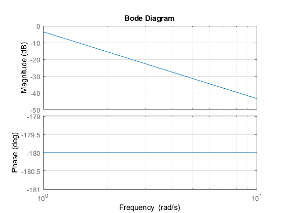
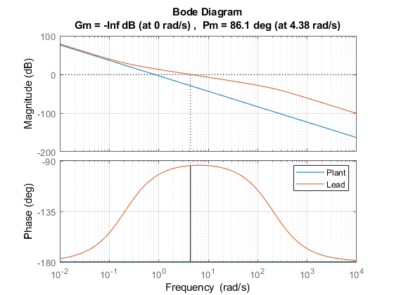
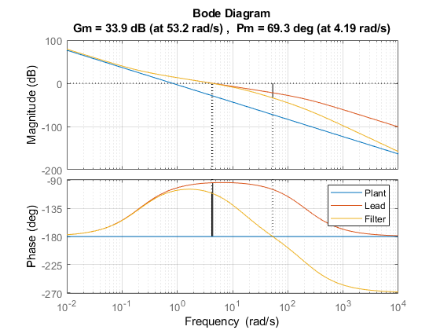
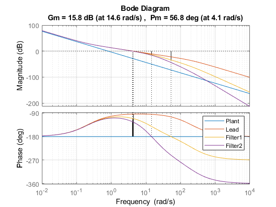

Contents
clc; clear; close; format compact;
run('vtol_param.m')
H - Vertical Plant
Ph_num = 1;
Ph_den = [(P.mc + 2*P.mr), 0, 0];
Phtf = tf(Ph_num, Ph_den);
figure()
bode(Phtf)
grid on
hold on

Cutoff Frequency
wr = .1;
wn = 200;
wc = 6.5;
gamma_r = .01;
PC_mag_des = 1/gamma_r
PC_mag_des =
100
Lead Design
M = 1000;
Lead_num = [1, wc/sqrt(M)];
Lead_den = [1, wc*sqrt(M)];
Leadtf = M*tf(Lead_num,Lead_den);
PC_mag_wr = bode(Phtf*Leadtf,wr);
LeadK = PC_mag_des/PC_mag_wr;
margin(Phtf*Leadtf*LeadK)
legend('Plant','Lead')
PC_mag_wr = bode(Phtf*Leadtf*LeadK,wr);

Low Pass Filter
wfilter = 14;
Filter_num = wfilter;
Filter_den = [1, wfilter];
Filtertf = tf(Filter_num,Filter_den);
margin(Phtf*Leadtf*LeadK*Filtertf);
legend('Plant','Lead','Filter')

Second Low Pass Filter
wfilter2 = 18;
Filter_num2 = wfilter2;
Filter_den2 = [1,wfilter2];
Filtertf2 = tf(Filter_num2,Filter_den2);
margin(Phtf*Leadtf*LeadK*Filtertf*Filtertf2)
legend('Plant','Lead','Filter1','Filter2')

Constraint Check
PC_mag_wr = bode(Phtf*Leadtf*LeadK*Filtertf*Filtertf2,wr)
PC_mag_wn = bode(Phtf*Leadtf*LeadK*Filtertf*Filtertf2,wn)
C_h = Leadtf*LeadK*Filtertf*Filtertf2
PC_mag_wr =
99.9959
PC_mag_wn =
9.8130e-05
C_h =
3.399e05 s + 6.987e04
----------------------------------
s^3 + 237.5 s^2 + 6830 s + 5.18e04
Continuous-time transfer function.
Constraints